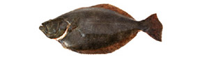

Gerollte heilbuttfilets
5,5 von 6die filets in streifen schneiden. mit salz, weissem pfeffer und zitronensaft würzen. den fisch mit cantadou
bestreichen. eine dose pelati und geviertelte champignons in einer gratinform verteilen. die involtinis
darauf geben. petersilie, oregano, basilikum, knoblauch, olivenöl, paniermehl und etwas zitronensaft mischen
und darüber streuen. bei 220 C ca. 20 min garen.
